25 separate image mockups. Select an image to open it full size.
Cycle: default, .75, .50, .25, default. The speed label appears for 3 seconds after a speed press. “Next Up:” appears for 3 seconds after any button press.
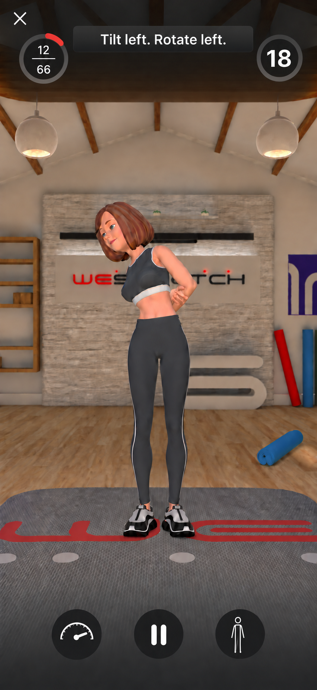
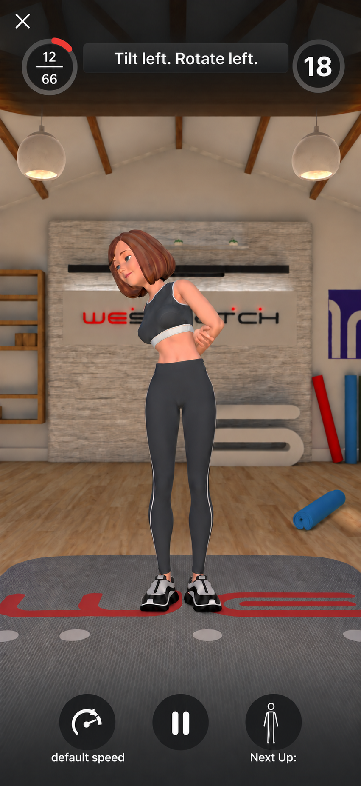
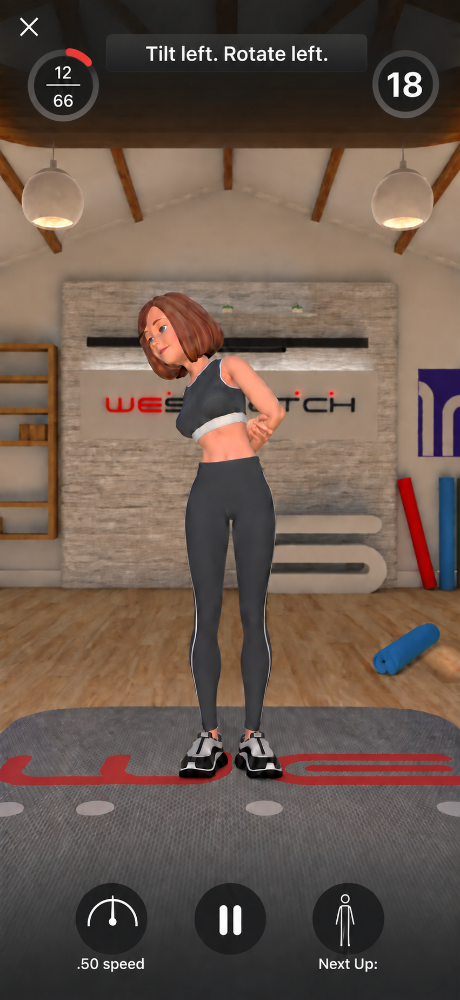
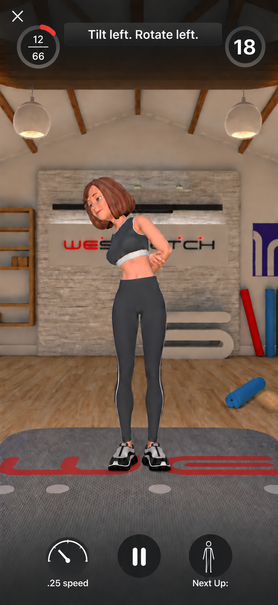
White figures inside the right dark circle. File names identify the supplied originals.
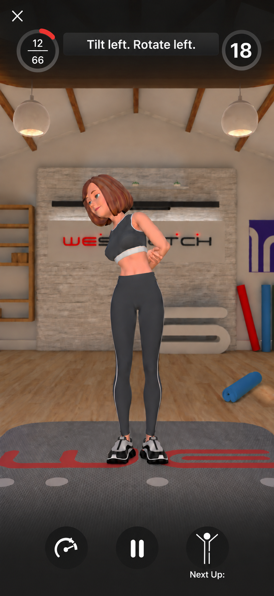
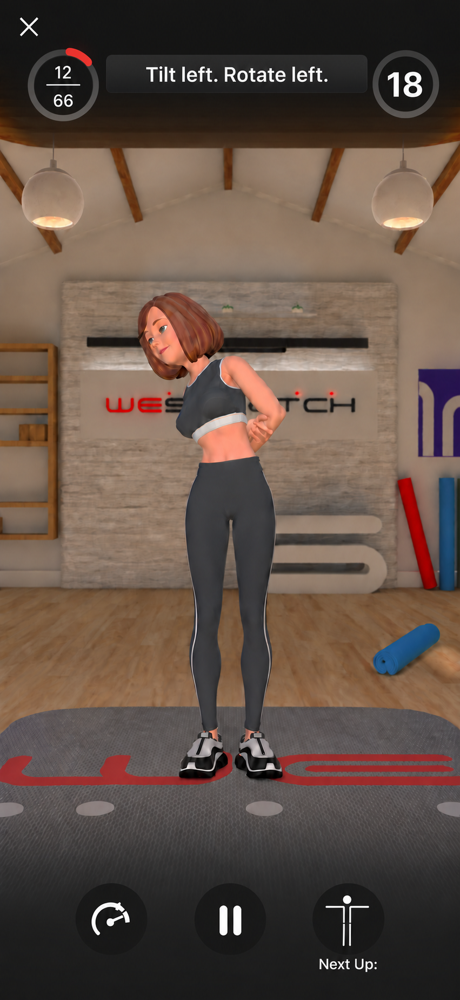
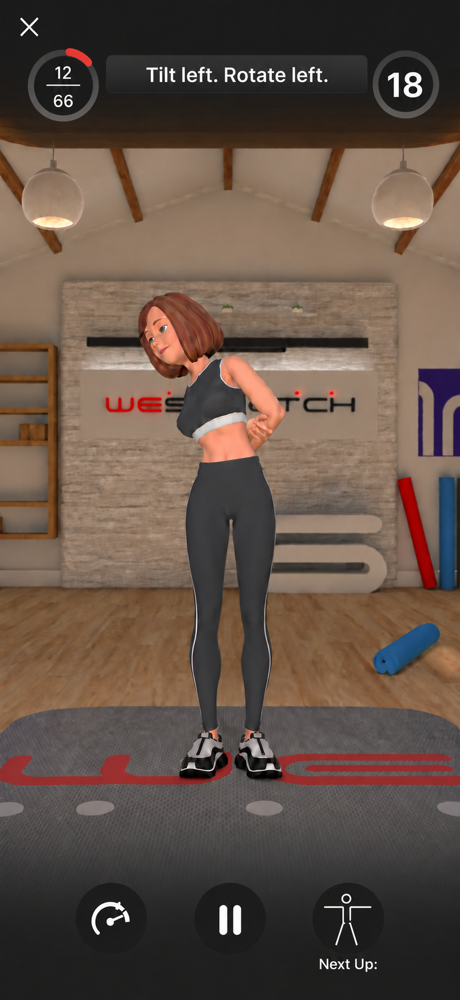
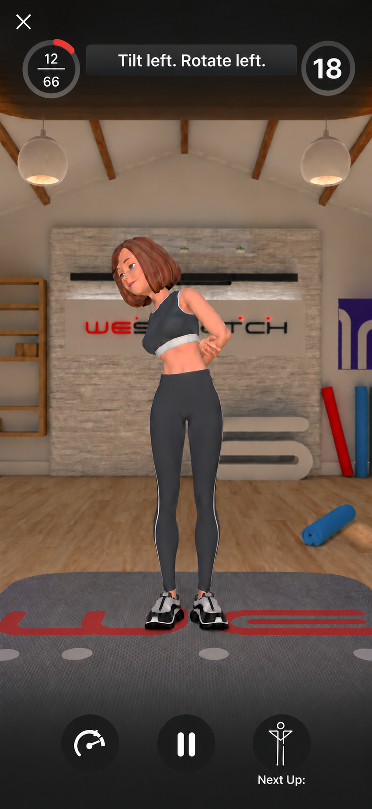
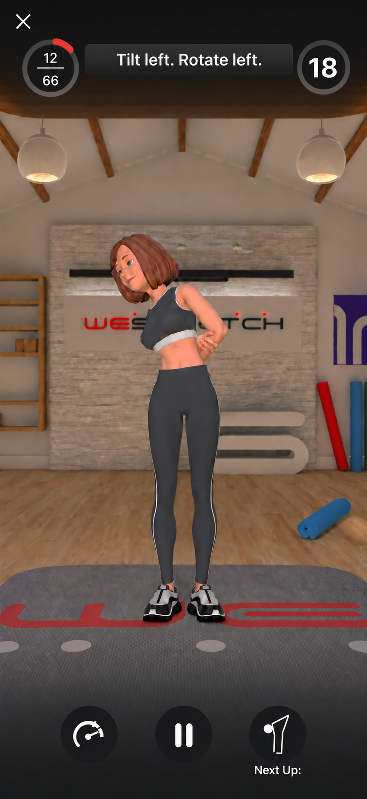
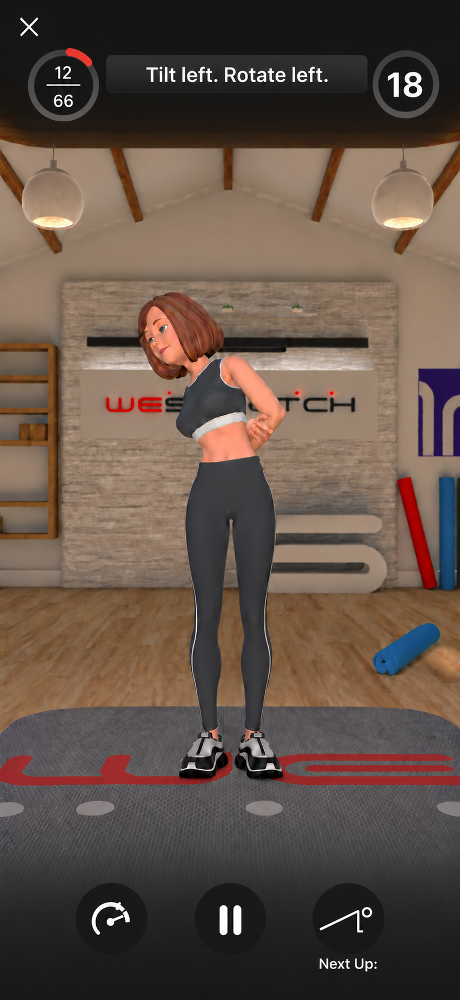
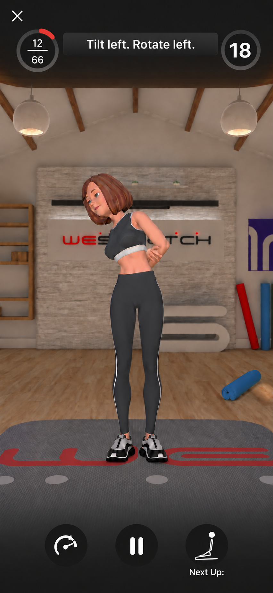
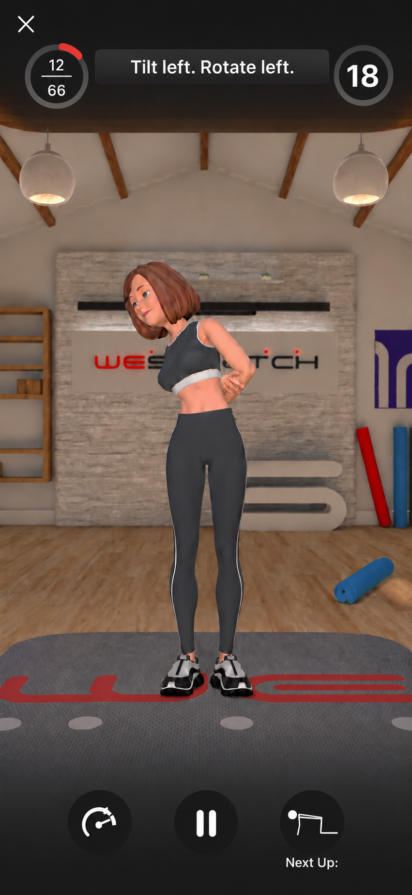
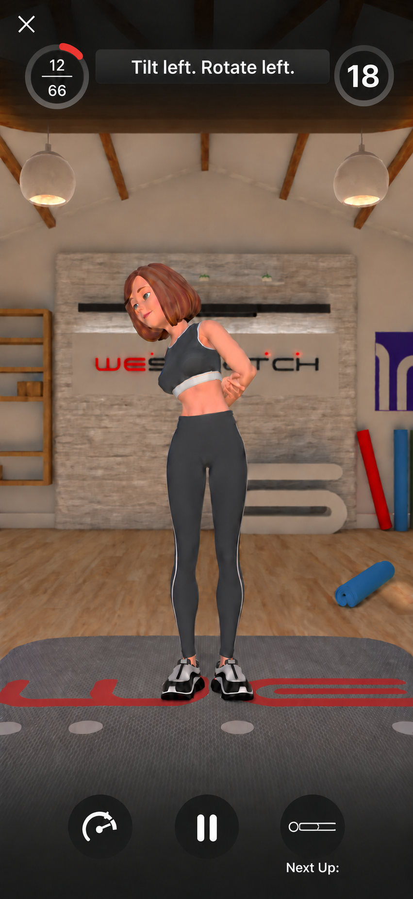
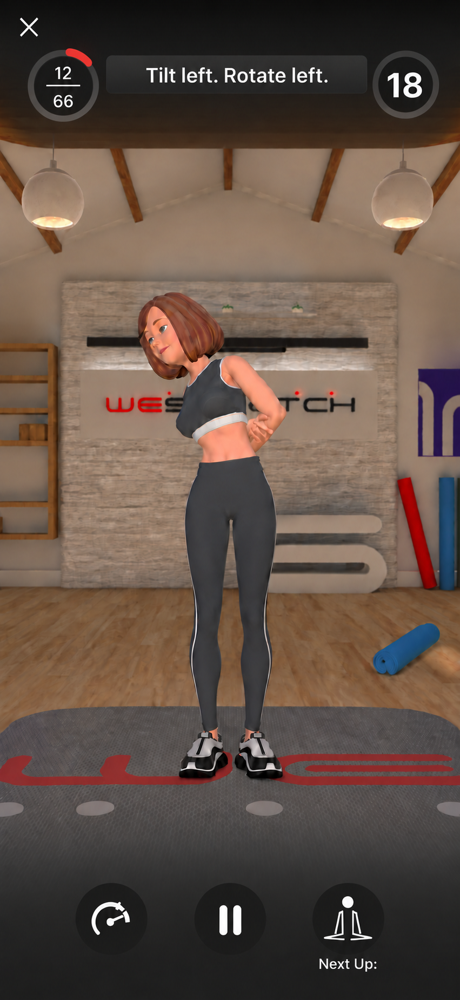
One CC toggle. One audio toggle with three states. The play triangle resumes the routine.
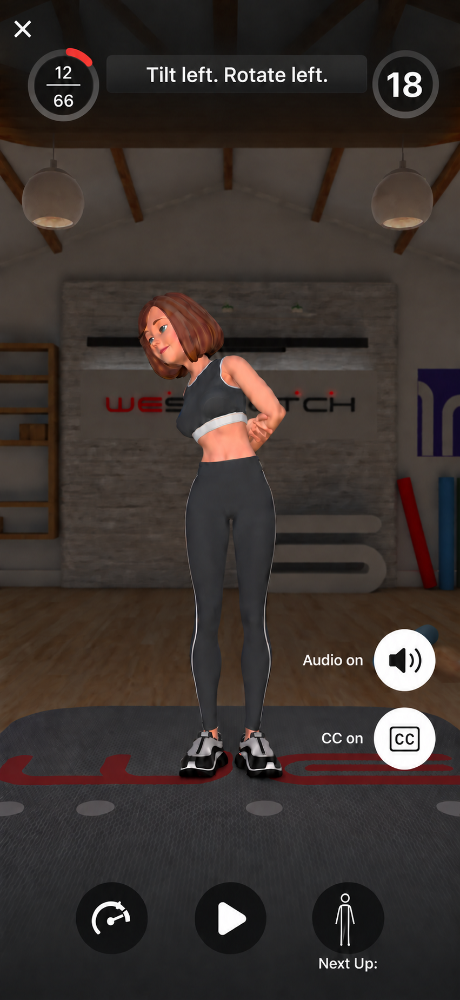
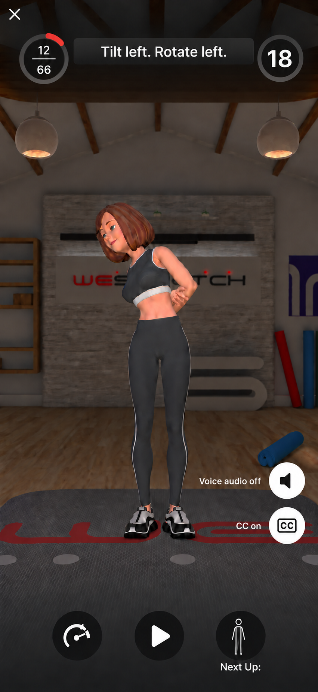
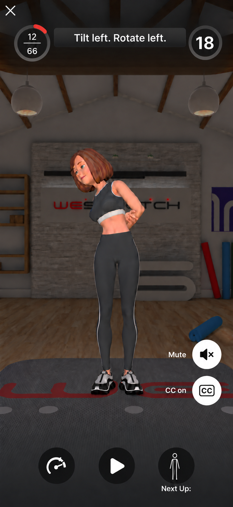
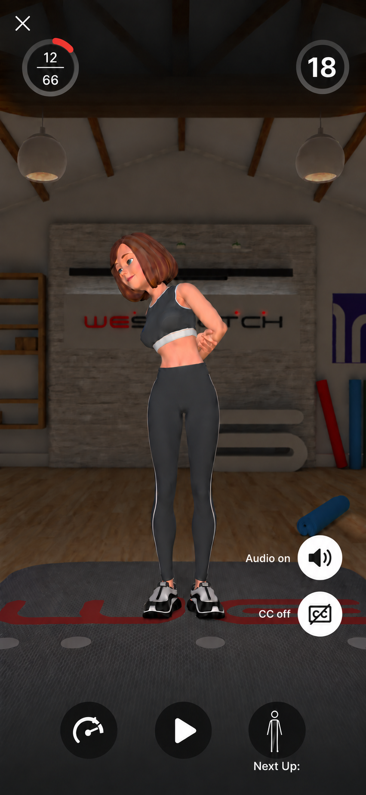
Static design choices for approval. Timing and controls are described, not implemented. Generated artwork has small alignment and stroke variations between screens.